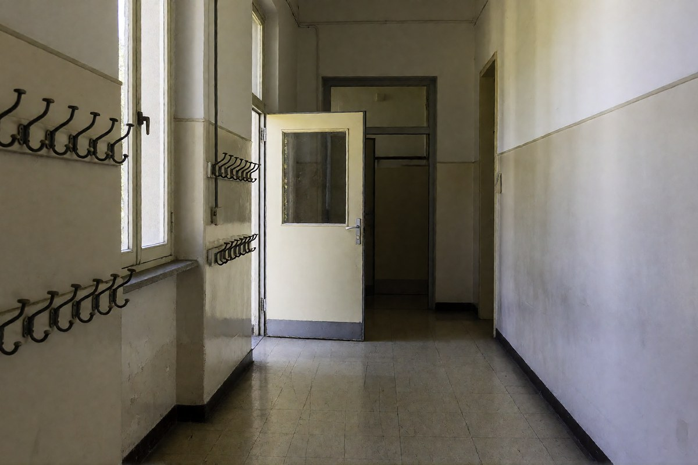

Politica italiana · 22 novembre 2026
La sedia vuota del Generale. L'editoriale del Riformista
Sul Riformista Carmelo Briguglio chiama «errore blu» il forfait di Vannacci al tavolo di Palazzo Chigi sugli allarmi bomba. L'editoriale per gli abbonati, con il commento dell'autore e il poscritto sulla legge Scelba.
di Franco Zanghì
Perché Roberto Vannacci non si è seduto al tavolo di Giorgia Meloni? Giovedì 12 novembre, dopo gli allarmi bomba che il giorno prima avevano mandato nel panico migliaia di scuole, la presidente del Consiglio aveva convocato a Palazzo Chigi i leader di tutti i partiti, di maggioranza e di opposizione. C'erano tutti tranne uno: il generale Vannacci, leader di Futuro Nazionale, che per impegni al Parlamento europeo ha dato mandato di rappresentarlo al suo capogruppo alla Camera, Edoardo Ziello.
Domenica 22 novembre, sul Riformista, l'ex parlamentare Carmelo Briguglio ha dedicato a quella sedia vuota un editoriale. Il titolo parla di una «ritirata del Generale» e di un «lusso autolesivo» del centrodestra.
La tesi
Convocando i leader, e non soltanto il comitato parlamentare per la sicurezza, Meloni ha cercato — scrive Briguglio — un rapporto nuovo con le opposizioni, in nome dell'interesse nazionale. E ha invitato anche Vannacci, il cui partito in quel comitato non c'è: non era scontato, perché è il concorrente alla sua destra, quello che la accusa di volerlo tenere fuori dalla coalizione.
Il Generale, invece, non è andato. Briguglio si chiede se sia stata poca dimestichezza con la politica o timidezza, e conclude che sul piano politico è stato «un errore blu»: non irreparabile, ma pesante, perché complica l'idea di un centrodestra più largo dell'attuale maggioranza.

Il poscritto
C'è poi un poscritto, e non è un dettaglio. Il 18 novembre la Procura di Roma ha aperto un fascicolo su Futuro Nazionale, dopo un esposto del sindacato dei militari, per valutare se il partito violi la legge Scelba, quella che vieta di ricostituire il partito fascista: è un fascicolo senza indagati e senza ipotesi di reato. Briguglio scrive che Futuro Nazionale, per quanto non ne condivida le idee, non è il partito fascista, e ricorda il 1972, quando un'iniziativa giudiziaria contro il Movimento sociale non portò a nulla e alle elezioni la destra missina toccò il suo massimo storico.
Come la vedo io
Sulla premier, Briguglio ha ragione, e lo dico con piacere. In giorni in cui le scuole venivano evacuate, chiamare tutti, anche chi ti attacca da destra, è stato un gesto da capo di governo e non da capo partito.
Su Vannacci sono un po' più comprensivo. Gli impegni a Bruxelles e a Strasburgo esistono, e mandare il capogruppo non è uno sgarbo. Ma un generale sa meglio di chiunque che ci sono riunioni a cui si va di persona: se chiedi di stare nella coalizione, quando la premier ti chiama su una questione di sicurezza nazionale, ti siedi al tavolo. Una sedia lasciata vuota, in politica, parla più di un comunicato.
Sul campo largo, un'osservazione sola. A Elly Schlein va riconosciuto di essersi seduta a quel tavolo. Ma tenere insieme chi governa con l'Europa e con la Nato e chi ha un programma contro la Nato è una contraddizione che prima o poi andrà sciolta: non da noi, dagli elettori.
E sul poscritto sto con Briguglio fino in fondo. Si può non condividere molte parole di Vannacci, e io su più di una cosa non sono d'accordo con lui. Ma i partiti li giudicano gli elettori, non i fascicoli: un fascicolo aperto su un esposto, senza indagati e senza reato, è una verifica dovuta, e tale deve restare.
E allora la domanda è questa: il Generale vuole davvero stare nel centrodestra, o preferisce restarne fuori, per poterlo criticare?
Fonti
- Il Riformista, Carmelo Briguglio, «La ritirata del Generale e quel lusso “autolesivo” del centrodestra: perché il forfait di Vannacci pesa sugli equilibri politici», 22 novembre 2026
- Il Giornale, «Allarmi bomba, concluso l'incontro con le opposizioni», 12 novembre 2026
- ANSA, «“Futuro Nazionale viola la legge Scelba”, la Procura di Roma apre un fascicolo», 18 novembre 2026
- Open, «Vannacci, la procura di Roma indaga su Futuro Nazionale», di Antonia Verderosa, 18 novembre 2026
- Il Post, «Secondo Repubblica la procura di Roma ha aperto un'indagine senza ipotesi di reato su Futuro Nazionale», 18 novembre 2026
Questo articolo nasce dall'editoriale per gli abbonati del 23 novembre 2026 e riferisce l'editoriale di Carmelo Briguglio pubblicato sul Riformista il 22 novembre 2026, con il commento dell'autore. Il fascicolo della Procura di Roma su Futuro Nazionale è senza indagati e senza ipotesi di reato: non ci sono accuse formulate contro nessuno. Il legale di Roberto Vannacci ha definito infondate le accuse contenute nell'esposto.